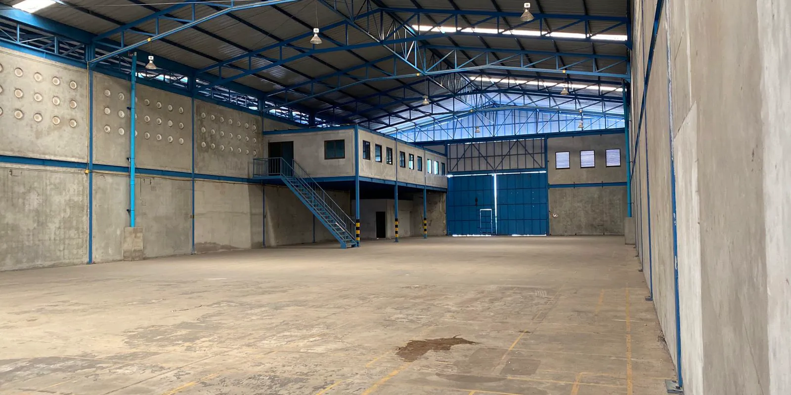
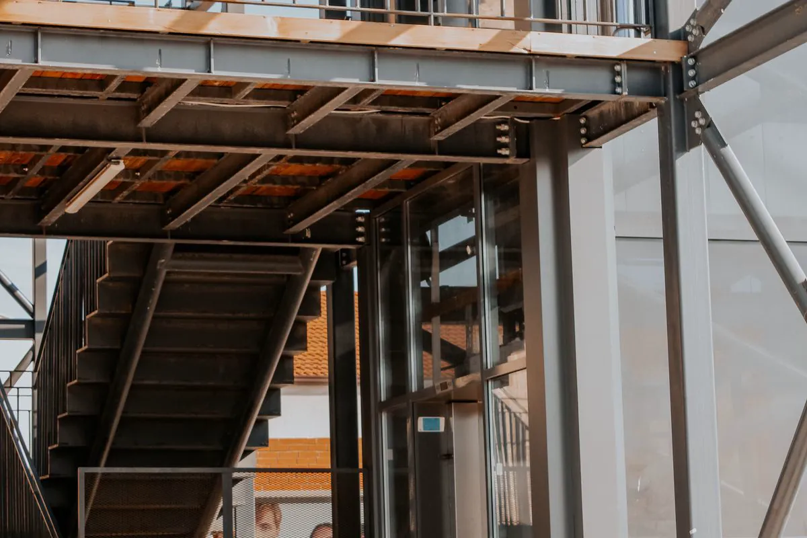
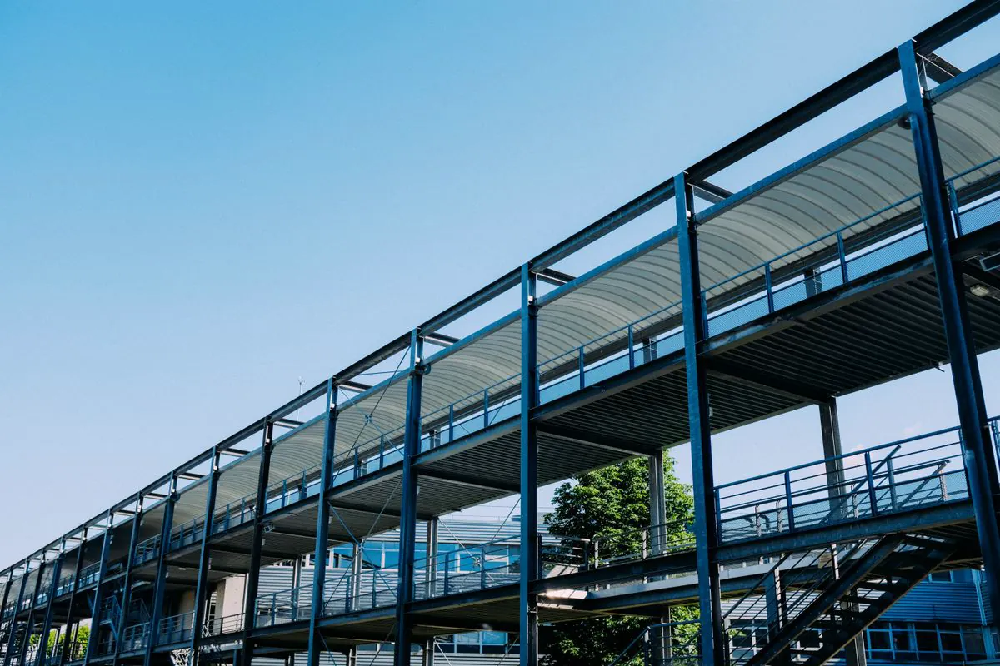
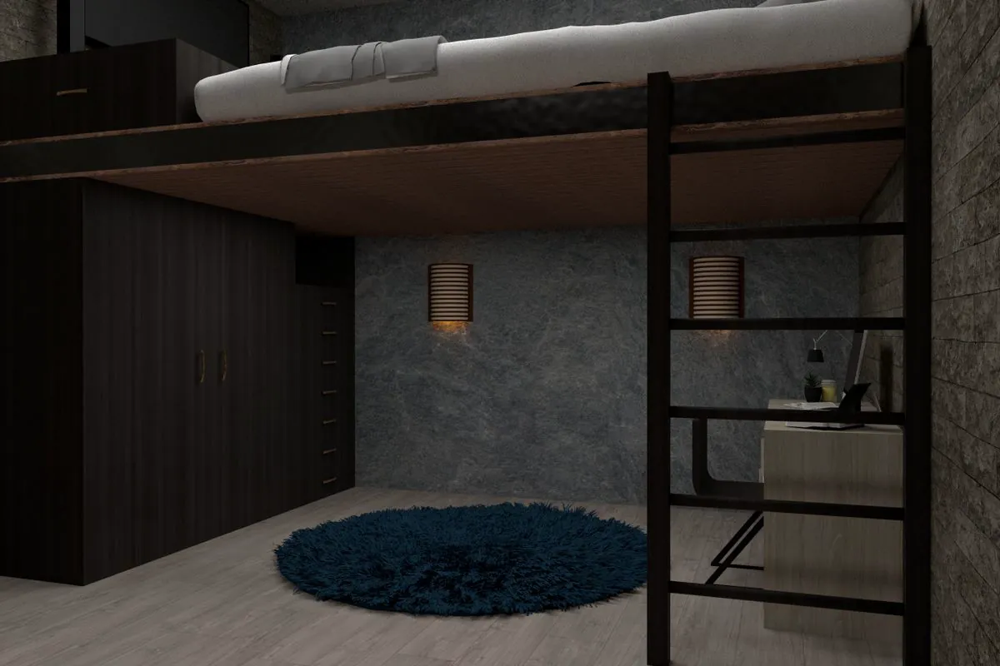
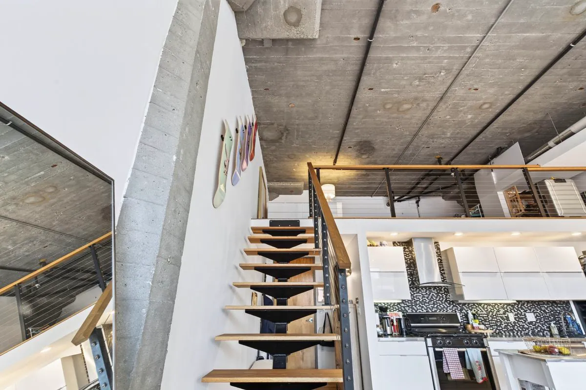
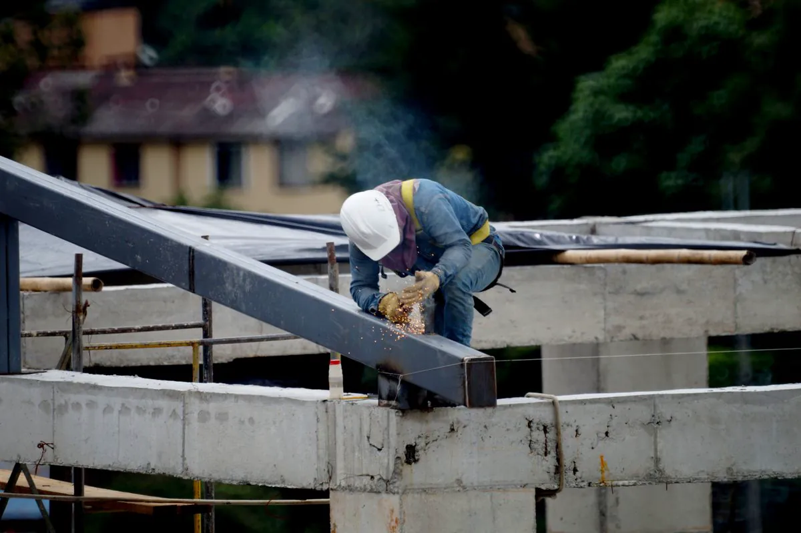

Galpão

Especialistas em montagem de estrutura metálica
Mezanino metálico em Vitória ES — mais área útil sem sair do lugar
Montamos mezanino em galpão, loja, escritório e casa: pilares, vigas, piso, escada e guarda-corpo, com o espaço funcionando ao lado. Verificação do piso existente, NR-35 e ART registrada no CREA-ES.
Galpão
Loja
Escritório
Loft
Sem pararMontagem com operação
NBR 14718Guarda-corpo
NR-35Trabalho em altura
ARTCREA-ES em toda obra
Área nova dentro do que você já tem
Especialistas em montagem de mezanino metálico
Resposta rápida
Mezanino metálico é um piso intermediário em estrutura de aço, montado dentro de um ambiente de pé-direito alto — galpão, loja, escritório ou casa — para ganhar área útil sem construir para fora. Leva pilares, vigas, piso, escada e guarda-corpo. A Axial Engenharia monta mezaninos em Vitória e na Grande Vitória, com ART.
Mezanino parece obra pequena, mas junta tudo o que exige cuidado: carga concentrada no piso existente, trabalho em altura dentro de um ambiente em uso e gente circulando embaixo. Por isso começamos pela visita: medimos o pé-direito livre, vemos o piso, as instalações do teto e o acesso das peças — e só então fechamos o escopo.
Engenheiro responsável
ART de execução
Montagem com operação ativa

Piso existente verificadoCarga de cada pilar comparada com o que o piso aguenta antes do projeto.
Operação preservadaÁrea isolada, horários combinados e ligações parafusadas perto de estoque.
Pé-direito aproveitadoAltura livre embaixo e em cima pensada para o uso, não só para caber.
Placa de cargaCarga máxima do piso indicada no projeto e na entrega.
Galeria
Mezanino em galpão, loja e casa
O mesmo princípio em escalas diferentes: estrutura de aço, piso leve e acesso seguro.




Calculadora
Calcule pilares e carga do seu mezanino
Veja quantos pilares a planta pede e quanto cada um descarrega no piso — o dado que decide se o piso do galpão aguenta.
Materiais
Tipos de piso para mezanino metálico
Toque em cada opção para comparar peso, uso indicado e cuidados.
Chapa xadrez
Chapa de aço com relevo antiderrapante, soldada ou parafusada sobre barrotes. Resistente e fácil de limpar; é a mais comum em depósito, área técnica e plataforma de manutenção.
- Espessura usual
- 4,75 a 6,35 mm
- Peso
- ≈ 38 a 50 kg/m²
- Indicado para
- Depósito, área técnica
Grade metálica (piso gradeado)
Barras portantes com travessas, normalmente galvanizadas. Deixa passar luz, ar e água do sprinkler — por isso é comum em mezanino de estoque e plataforma industrial.
- Acabamento
- Galvanizada a fogo
- Vantagem
- Luz e ventilação passam
- Cuidado
- Objeto pequeno cai pela malha
Painel cimentício
Painel de 40 mm com miolo de madeira e face cimentícia, parafusado nas vigas. Leve, silencioso e pronto para receber piso vinílico ou carpete — a escolha típica de mezanino de escritório e loja.
- Espessura
- ≈ 40 mm
- Acabamento
- Vinílico, carpete, laminado
- Indicado para
- Escritório, loja, casa
Steel deck com concreto
Fôrma de aço nervurada com concreto por cima. É o piso mais rígido e silencioso: aguenta carga alta, empilhadeira leve e recebe qualquer revestimento. Pesa mais, então a verificação do piso existente fica ainda mais importante.
- Espessura
- 10 a 14 cm
- Peso próprio
- ≈ 2 kN/m² ou mais
- Veja também
- Laje metálica
Aplicações
Onde montamos mezanino metálico
Estoque
Comércio
Residencial
Como montamos
Do levantamento no local à placa de carga
Visita e medição
Pé-direito, piso existente, instalações do teto e acesso das peças.
Projeto e plano
Grade de pilares, piso, escada, guarda-corpo e sequência de montagem.
Montagem
Área isolada, pilares fixados, vigas niveladas e piso instalado.
Entrega
Guarda-corpo, placa de carga, as-built e ART no CREA-ES.
Antes de pedir orçamento
O que medir e fotografar
- Comprimento e largura da área do mezanino;
- Pé-direito livre até a viga ou a treliça mais baixa do teto;
- Uso pretendido: escritório, loja, estoque (com peso das prateleiras) ou casa;
- Fotos do piso e de trincas, se houver;
- Posição da escada e portas, rotas de fuga e sprinklers;
- Horário em que a montagem pode acontecer.
Sem projeto? Fazemos o projeto estrutural e seguimos para a montagem.
NBR 8800Estruturas de aço
NBR 6120Cargas de uso
NBR 14718Guarda-corpo
NBR 9077Saídas e escadas
NR-18Obra
NR-35Altura
Dúvidas
Perguntas frequentes sobre mezanino metálico
O piso do meu galpão aguenta um mezanino?
Depende da espessura e da armação do piso e da carga que cada pilar vai descarregar. Mezanino leve de escritório costuma apoiar no piso existente com placa de base maior; mezanino de estoque pesado muitas vezes pede sapata própria sob cada pilar. A verificação é feita antes do projeto.
Dá para montar o mezanino com o galpão ou a loja funcionando?
Sim. Isolamos a área de montagem, combinamos horários com a operação e preferimos ligações parafusadas dentro de ambiente com estoque, para reduzir solda e faísca. Nenhum trabalho acontece com gente sob carga suspensa.
Qual o melhor piso para mezanino metálico?
Chapa xadrez é a mais usada em depósito e área técnica; grade metálica deixa passar luz e ar; painel cimentício é leve e recebe piso de escritório; steel deck com concreto dá o piso mais rígido e silencioso, para carga alta ou uso de escritório com muita circulação.
Qual a altura do guarda-corpo do mezanino?
Guarda-corpo de edificação segue a ABNT NBR 14718, com altura mínima de 1,10 m, e em área industrial deve ter rodapé para impedir queda de objetos. Escada e guarda-corpo fazem parte do escopo de montagem.
Mezanino metálico precisa de ART?
Sim. É uma estrutura que recebe pessoas e carga, e precisa de projeto e execução com responsável técnico. Montamos com ART de execução registrada no CREA-ES, e a placa de carga máxima do piso é indicada no projeto.
Quanto custa um mezanino metálico?
O custo depende da área, da carga de uso, do tipo de piso, do vão entre pilares, da escada e do guarda-corpo e do acesso ao local. Com as medidas e o uso pretendido, a proposta separa estrutura, piso, escada e montagem para você comparar.
Precisa de mais área sem construir para fora?
Mande medidas, pé-direito, fotos do piso e o uso pretendido. Retornamos com o escopo no mesmo dia útil.
Onde atendemos
Mezanino metálico na Grande Vitória
Sede em Vila Velha. Montagem em galpões e lojas de Vitória, Vila Velha, Serra, Cariacica, Viana, Guarapari e Fundão, e sob consulta em Anchieta, Aracruz e Linhares.
Outras estruturas que montamos
Laje metálica
Vigas e steel deck para laje e ampliação.
Ver laje →Sobrado metálico
Esqueleto de aço para casa de 2 ou 3 pavimentos.
Ver sobrado →Galpão metálico
Pórticos, treliças, terças e telhas.
Ver galpão →Perfis e aços
Guia de treliças, perfis e calculadora de peso.
Ver guia →
Referências técnicas
Normas e certificações que sustentam cada laudo
Inspeção, ensaio e projeto conduzidos sob códigos reconhecidos no Brasil e no exterior, por profissionais qualificados nos organismos de certificação da área.
-
 Inmetro
Instrumentos de medição com calibração rastreável à Rede Brasileira de Calibração.
Inmetro
Instrumentos de medição com calibração rastreável à Rede Brasileira de Calibração.
-
 ASME
Código ASME Seção VIII no cálculo e na avaliação de vasos de pressão e caldeiras.
ASME
Código ASME Seção VIII no cálculo e na avaliação de vasos de pressão e caldeiras.
-
 ABNT
Normas NBR aplicáveis a cada laudo técnico, ensaio e projeto estrutural.
ABNT
Normas NBR aplicáveis a cada laudo técnico, ensaio e projeto estrutural.
-
 Abendi
Ensaios não destrutivos executados por profissional qualificado pelo SNQC.
Abendi
Ensaios não destrutivos executados por profissional qualificado pelo SNQC.
-
 CMSE
Certified Machinery Safety Expert aplicado à adequação de máquinas à NR-12.
CMSE
Certified Machinery Safety Expert aplicado à adequação de máquinas à NR-12.
Logotipos exibidos como referência às normas, códigos e qualificações aplicados nos serviços.